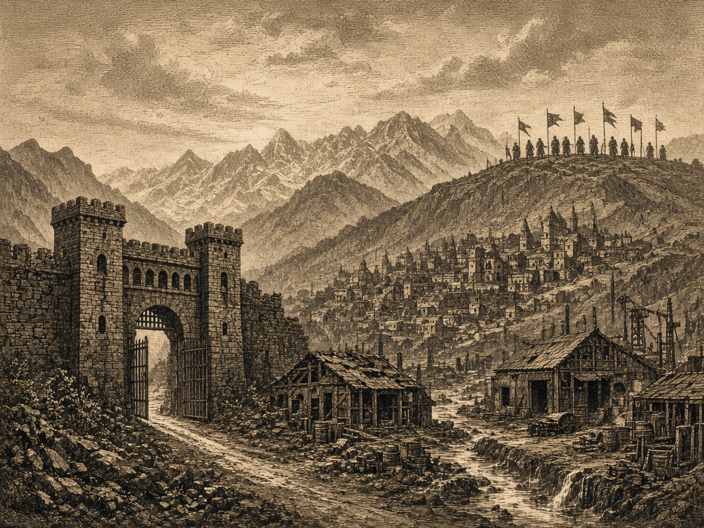

銀嶺侯国、滅亡 現代都市もあろあろ領に
人がいなくなり無人国へ 王国軍の盟主は金野へ交代 オリョルッルは泰平へ宣戦、教団支援でセントラ北岸へ戦線拡大

【総合部】第202期、銀嶺侯国が滅亡した。現代都市（75,30）があろあろ国の占領下となり、侯国から人がいなくなって無人国となった。陣営『王国軍』は銀嶺を所属から外し、盟主は金野伯爵領へ交代した。山岳の侯国が地図から消え、ノルステア東岸の戦線はあろあろの色に塗り替わる。詳報は2面。
オリョルッル、泰平へ宣戦 教団支援で北岸へ戦線拡大
オリョルッル王国は泰平天国へ宣戦布告し、開戦は第207期。「御狐様はオリョルッルの生命線」と表明して、狐っ娘の尻尾教団との絆を前面に出した。王国はかつて鉄の輸入を教団に頼った時期があり、そのころからの友誼がいまも重い。いまの鉄は、第172期にカペレナ王国から100年の契約で借り受けた鉱山で賄う。それでも教団が落ちれば、資源地帯を手にした泰平と直接対峙することになる。国防の観点からも、セントラ大陸へ援軍を送らざるを得ないとみられる。黄砂・桃谷・スルガ・翠湖との戦線に加え、天都を首都とする大国との衝突が予告された。セントラ大陸では、すでに泰平と狐っ娘の尻尾教団の砲火が続き、黄砂の兵站（26,28）もオリョルッルの占領下にある。王国が加われば、泰平と教団の戦場はオリョルッル軍を巻き込んで北岸へ広がる。同じ週、なのです主義人民共和国と蒼森辺境伯領は停戦合意で戦争を終結させた。黒潮自治国は大陸反攻を掲げ、第203期開戦の蒼森戦へ艦隊と部隊を整えている。国特集は8面のカペレナ王国。